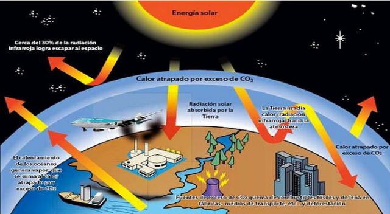
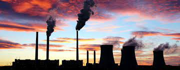
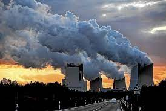
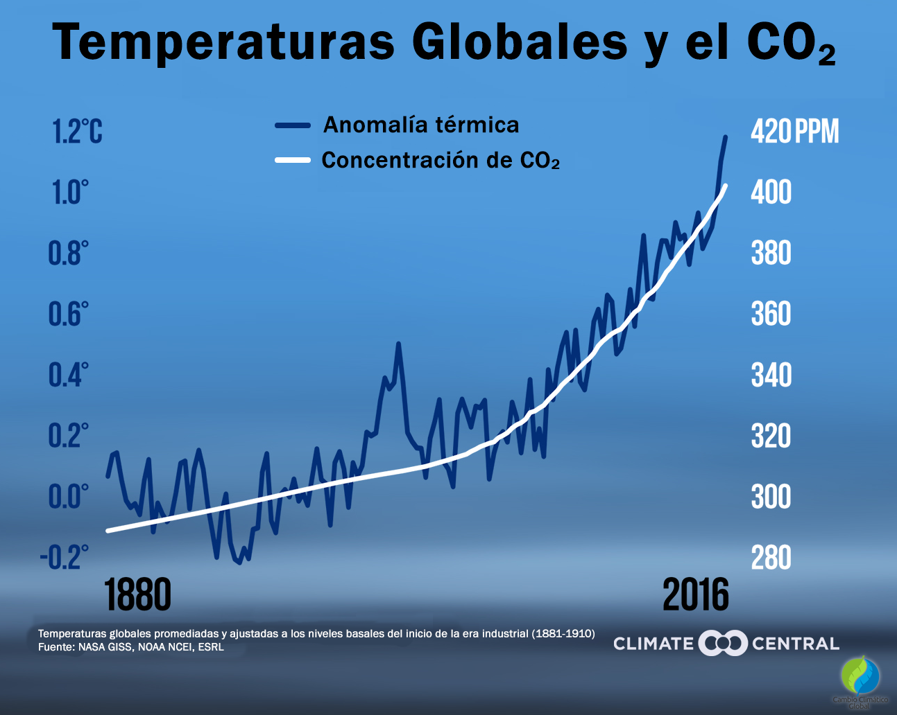

<HTML>


</html>

      <HEAD>
             <TITLE>Calentamiento global</title>
      </HEAD>
     <link rel="stylesheet" href="style.css">
    <meta charset="UTF-8">
    <meta name="fondoMP4" content="width=device-width,initial-scale=1.0">
    <title>Calentamiento global</title>
    
<BODY>
   <center><H1><font size="200" <font Color="Blue"> Calentamiento Global </Font> </h1> </center>

   <center>  </center>
<br>
<p><h2>Es el aumento gradual de la temperatura promedio de la atmósfera terrestre y los océanos, principalmente causado por la emisión de gases de efectos invernadero debido a actividades humanas como la quema de combustibles fósiles y las deforestaciones. Esto conduce al cambios de clima, cómo el aumento de las temperaturas el de regimiento de los glaciares de nivel del mover entre otros impactos. <a href=" https://calentamientoglobal.github.io/github.io/3.html "> mostrar mas...</a>
</h2></p>
<br>
                                                                                                                                                                                                                                                                                                                 
                          <center>
<br>
<p>

<Center>
<video controls width="600">
<source src="video.jpg" type=video/mp4>
</video>
</center>

<H1>¿Qué debo hacer para evitar el Calentamiento Global?</h1>

<p><h2>Consume menos, reutiliza, repara y recicla.

para proteger nuestro clima, compra menos cosas, compra de segunda mano, repara lo que puedas y reciclaste solo los plásticos generaron 1800 millones de toneladas métricas de emisiones de gases de efecto invernadero en 2019,el 3,4% del total mundial.<a href="file:///D:/calentamiento%20Global%20pagina%20web/4.html"> mostrar mas...</a></p>


<h2></p>   
<Center>


<H2>Clasificación del Calentamiento Global</h2>

<p><h3>El calentamiento global antropogénico es el mas preocupante que es causado principalmente por las actividades humanas. Otro tipo de Calentamiento global es el polar, qué se refiere al aumento de la temperatura en las regiones polares, cómo el artético y la artética. <a href="file:///D:/calentamiento%20Global%20pagina%20web/5.html"> mostrar mas...</a></p></h3></p>  
     


<body>
<table border="1" width="100%">
<thead bgcolor="aqua">
<tr>
<th><h2>Tipos de Contaminación Global</h2></th>
<th><h2>Definición</h2></th>
<th><h2>Imagen</h2></th>
</tr>
</thead>

<tbody align="center" bgcolor="">
<tr>
<td><h2>Aumento de los gases de efecto invernadero</h2></td>
<td><h2>La gran mayoría de los procesos de este tipo liberan una enorme de gases de efecto invernadero que, una vez en la atmósfera, deterioran la capa de ozono y, ala vez, expone ala Tierra de Manera directa a los rayos del sol.<a href="file:///D:/calentamiento%20Global%20pagina%20web/6.html"> mostrar mas...</a></td>   


<td></td>
</tr>

<tr>
<td><h2>Quema de combustibles Fósiles</h2></td>
<td><h2>En efecto negativo de los combustibles fósiles es doble si tenemos en cuenta la contaminación del aire y los problemas de salud que se pueden derivar de esta circunstancia.<a href="file:///D:/calentamiento%20Global%20pagina%20web/7.html"> mostrar mas...</a> </td>  
<td></td>
</tr>

<tr>
<td><h2>Deforestación de Selvas y Bosques</h2></td>
<td><h2>Los árboles tiene la facultad de convertir el CO2 en oxigeno a través del proceso de la fotosíntesis, con lo cual contribuyen a reducir la contaminación del aire. Pero si reducimos su numero, la concentración de CO2 y de Otros gases será mayor y, por lo tanto, aumentaran las temperaturas terrestres.<a href="file:///D:/calentamiento%20Global%20pagina%20web/8.html"> mostrar mas...</a> </td>   

<td></td>
</tr>

<tr>
<td><h2>Excesivo uso de fertilizantes</h2></td>
<td><h2>Los pesticidas, fertilizantes y además químicos empleados en sectores como la agricultura y la ganadería son otra causa directa del calentamiento global.<a href="file:///D:/calentamiento%20Global%20pagina%20web/9.html"> mostrar mas...</a></td>   

</td>      
<td></td>
</tr>
 
<tr>
<td><h2>Alta Producción de Residuos</h2></td>
<td><h2>La alta producción de residuos también  favorece el calentamiento global. ¿De que manera? Cuántos mas residuos produzcamos a diario, mayores serán los niveles de gas metano en el ambiente, un elemento que se genera durante la descomposición de materiales en los vertederos.<a href=" https://calentamientoglobal.github.io/github.io/10.html "> mostrar mas...</a></td>   


</td>  
<td></td>
</tr>
<br>
<p><h2>Grafica del Calentamiento Global</h2></p>
<br>
<Center></Center>
<br>

</tbody>

</table>


</body>

</HTML>
